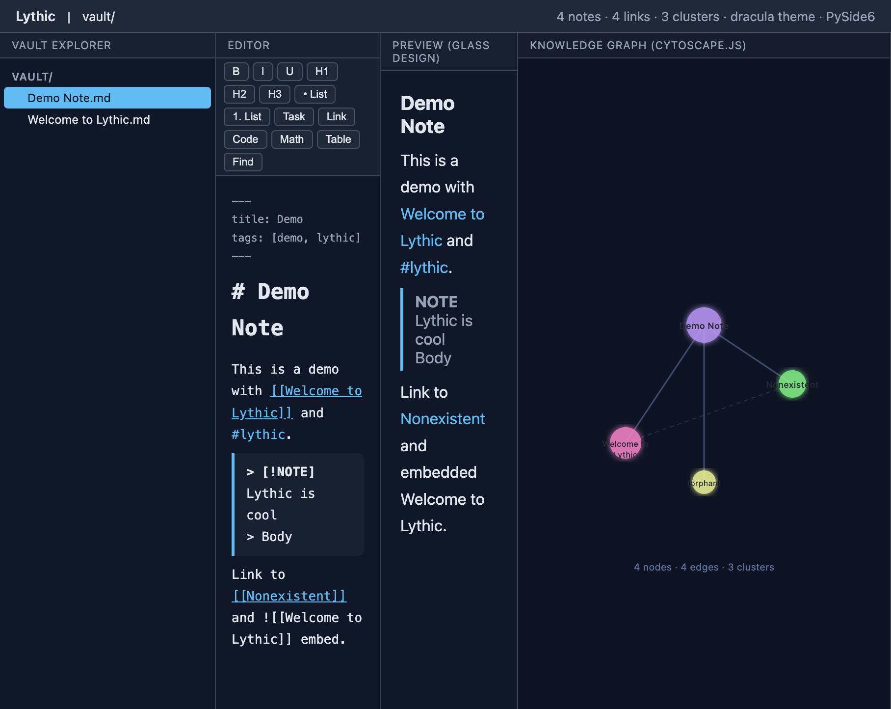
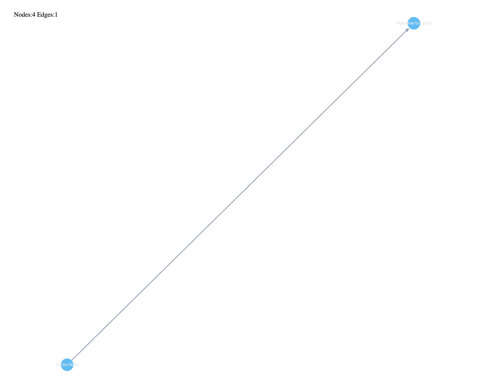
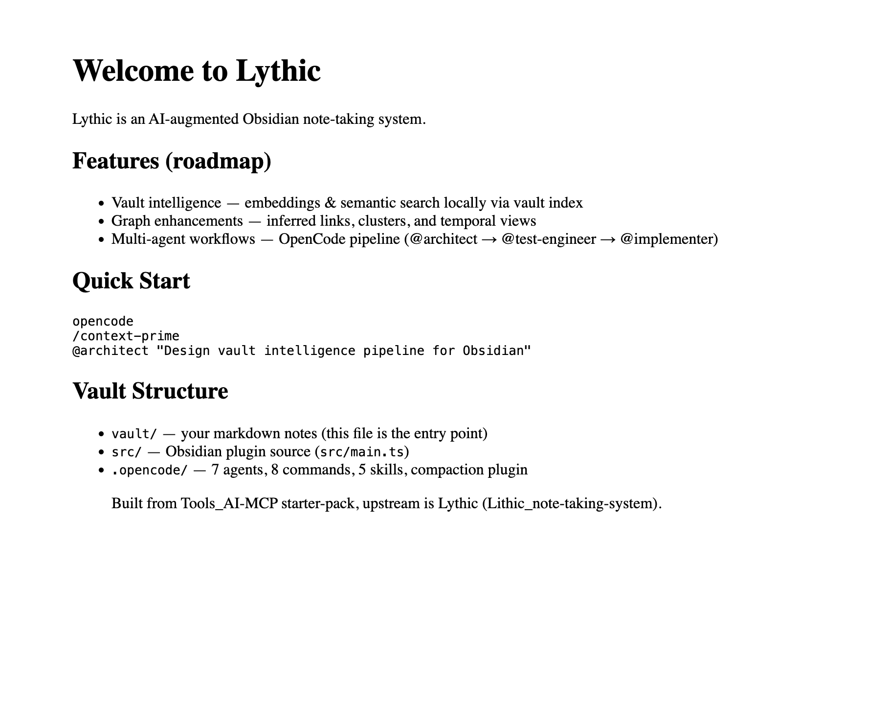

Obsidian 1:1 Clone in Python (PySide6) — Implementation Report



| ID | Milestone | Features | Status |
|---|---|---|---|
| M1 | Scaffold | ADR-001, domain (Note/Tag/WikiLink/VaultGraph), ObsidianMarkdownParser, SqliteVaultRepo (WAL+FTS5), VaultIndexer (watchdog), SubprocessGitAdapter | Complete |
| M2 | Graph Visible | Local Cytoscape.js bundle, QWebChannel bridge, ThemedWebView, 4-pane splitter, ego_graph 2-hop, deduped edges | Complete |
| M3 | Large Graph | QThread LayoutWorker (off-main-thread spring_layout), sigma.js WebGL switch at 10k nodes | Complete |
| M4 | Clustering | Louvain communities (networkx), compound Cytoscape nodes, cluster color palette | Complete |
| M5 | Editor | QTextEdit (not QPlainTextEdit), EditingToolbar 40+ cmds, QUndoCommand, font/heading/lists/link/table | Complete |
| M6 | Code/Math | Pygments CodeBlockHighlighter, KaTeX math rendering (CDN + local bundle fallback) | Complete |
| M7 | Media/Sheet | MediaEmbed (QPixmap+QMediaPlayer+drag-to-vault), SheetView (QTextTable+openpyxl) | Complete |
| M8 | Git Sync | GitAutoSync QTimer 30s, Dulwich fallback, keyring token store, pathspec ignore guard | Complete |
| M9 | Design System | glass.css (css.glass 451★ recipe), tokens.css (100+ CSS vars), components.css, liquidGL WebGL hero, QSS Fusion native shell | Complete |
| M10 | AI Service | AIService (metis api.metisai.ir), offline heuristics (clean/style/summarize/fix-frontmatter) | Complete |
presentation (PySide6 Qt widgets)
├── VaultTree (QTreeView + QFileSystemModel)
├── EditorPane (QTextEdit + EditingToolbar)
├── PreviewPane (QWebEngineView + glass CSS)
├── GraphView (QWebEngineView + Cytoscape.js)
└── SettingsDialog (QSettings + live theme preview)
│
application (façade)
├── VaultService (index_all, search, build_graph)
└── AIService (clean, style, summarize, fix_frontmatter)
│
domain (value objects, no DB)
├── Note, Tag, WikiLink, VaultConfig
├── VaultGraph (to_cytoscape_json, ego_graph, spring_layout)
└── Cluster (Louvain communities)
│
infrastructure (adapters)
├── ObsidianMarkdownParser (markdown-it-py + frontmatter)
├── SqliteVaultRepo (WAL + FTS5 + JSON1)
├── VaultIndexer (watchdog + QTimer 200ms debounce)
├── SubprocessGitAdapter / DulwichGitAdapter
├── ThemeService (TOML → CSS vars)
├── QssBuilder (QSS Fusion dark glass)
└── LatexRenderer (KaTeX CDN + bundle)
| Theme | Background | Accent | Glass Blur | Radius |
|---|---|---|---|---|
| Default (Slate) | #0f172a | #38bdf8 (Sky) | 16px | 12px |
| Dracula | #282a36 | #bd93f9 (Purple) | 18px | 12px |
| Glassmorphism | #0f172a | #38bdf8 (Sky) | 20px | 24px |
| Tokyo Night | #1a1b26 | #7aa2f7 (Blue) | 14px | 14px |
Glass recipe: rgba + blur(12-20px) + saturate(160-200%) + border 1px rgba(255,255,255,0.18) + radius 12-24px + shadow 0 8px 32px.
Sources: css.glass 451★, Hype4.academy, Tailwind backdrop-blur, shadcn supports-[backdrop-filter], neumorphism.io contrast.